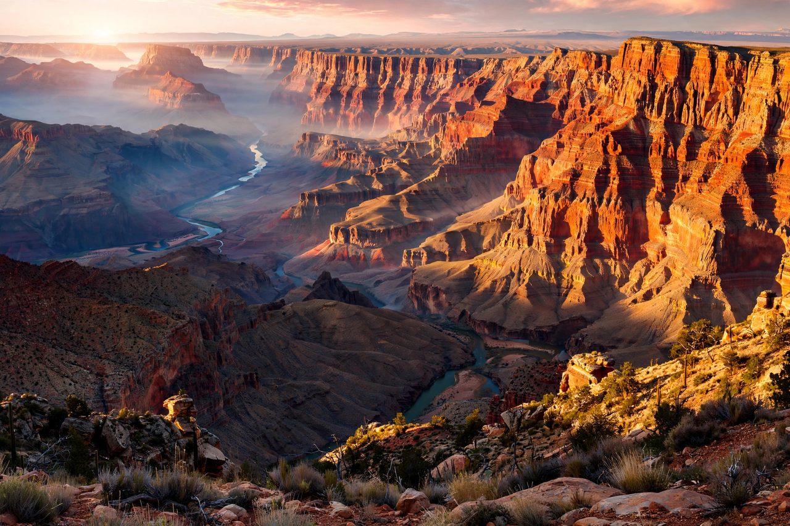

Grand Canyon
From Wikipedia, the free encyclopedia

[Image: The Grand Canyon at sunrise, Colorado River below]The Grand Canyon at sunrise, Colorado River below
The Grand Canyon is a steep-sided canyon carved by the Colorado River in Arizona, in the southwestern United States. It is 446 km long, up to 29 km wide and over 1,800 metres deep — vast enough to expose rock layers spanning nearly two billion years of geological history.
Geology
The canyon was cut mainly in the last five to six million years as the Colorado River incised the uplifted Colorado Plateau, though parts of the system are older and its exact chronology is debated. Its strata — from the Kaibab Limestone at the rim down to the Vishnu Schist in the inner gorge — record ancient seas, deserts and mountains. Erosion continues grain by grain today.
History and visiting
Indigenous peoples, including the Havasupai, Hualapai, Navajo and Hopi, have lived in and around the canyon for thousands of years and retain deep connections to it. Europeans first saw it in 1540 with Coronado's expedition; John Wesley Powell led the first recorded river expedition through it in 1869. Designated a national park in 1919, Grand Canyon National Park receives around five to six million visitors a year; the Skywalk glass bridge on Hualapai land opened in 2007.